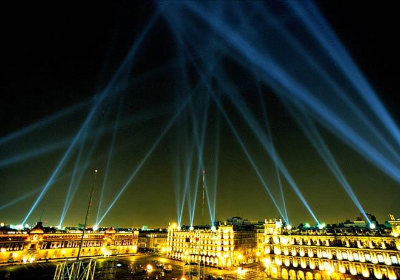

Alzado Vectorial fué una obra de arte interactivo diseñada para transformar el Zócalo de la Ciudad de México. Utilizando un interfaz de realidad virtual este sitio web le permitía a usted diseñar una escultura de luz con 18 cañones antiaéreos localizados alrededor de la plaza. A cada participante se le hizo una página web para archivar su diseño con fotos de tres cámaras digitales. La pieza se desconectó el 7 de enero del 2000, después de recibir cientos de miles de visitas de 89 países y de todos los estados de la república.
El artista mexicano-canadiense Rafael Lozano-Hemmer acuñó el término "arquitectura relacional" para denominar a los eventos interactivos a gran escala que son capaces de transformar edificios emblemáticos a partir de nuevos interfaces tecnológicos.